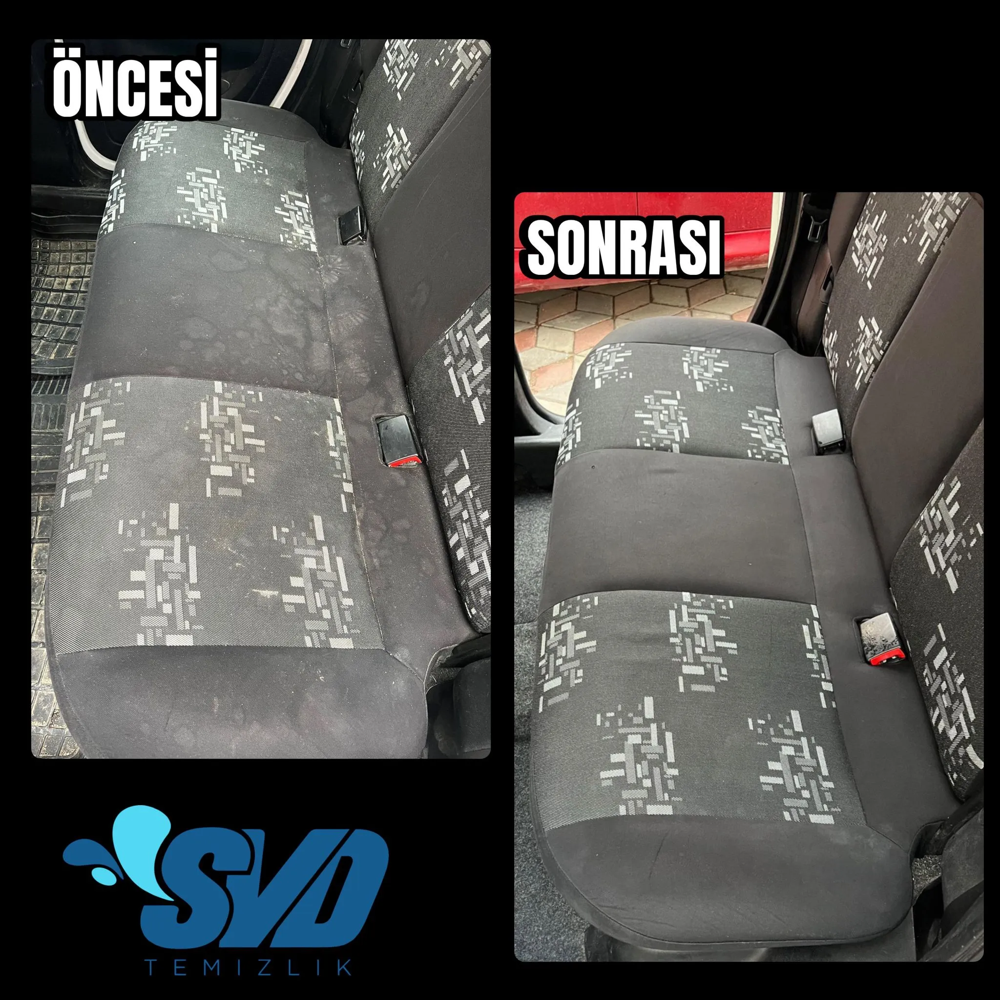

Aracınızın İçinde İlk Günkü Temizlik: Yerinde VİP Hizmet
Aracımız, gün içerisinde fark etmeden en çok kirlettiğimiz kapalı yaşam alanlarından biridir. Yağmurlu günlerdeki su lekeleri, dökülen içecekler, kumaş gözeneklerine hapsolan sigara dumanı ve otonun havalandırmasından yayılan tozlar zamanla oto döşemenizde koku ve sağlığa zararlı bakteriler üretir.
Oto yıkamacıların yaptığı ıslak bezle klasik silme yöntemi, kiri süngerin diplerine doğru kusmasına neden olan en büyük hatadır. SVD Temizlik olarak evinize veya iş yerinize geliyor, elektrik prizi bulabileceğimiz her konumda profesyonel Kârcher makine sistemleriyle otomobil (takoz) ve ticari araç koltuklarınızı vakumlayarak (emerek) söküyoruz.
Araç Koltuğu Yıkamanın Adımları
- Toz Alma / Vakumlama: Döşeme aralarındaki ve kızaklardaki (görünen) kırkıntıların ve partiküllerin vakum makinesi ile çekilmesi.
- Leke Şoklama: Kola, kusmuk, çikolata vb. yoğun lekeli bölgelere arındırıcı spesifik kimyasalların spreylenerek yumuşatılması.
- Fırçalama: Koltuğun kumaşına uygun sertlik derecesindeki dairesel fırça aparatlı polisaj makinesi ile şampuan köpüğünün yüzeye yedirilmesi. (Bu aşama kirleri dipten yüzeye çıkarır)
- Durulama ve Geri Vakumlama: Çift motorlu güçlü sanayi makinemiz ile kirli sıvı, leke solüsyonları ve köpüğün araba kumaşının derinliklerinden %95 oranında tek emişte çekilmesi.
Sıkça Sorulan Sorular
Makinelerimiz kumaştaki suyu büyük ölçüde çeker. Camları hafif aralayarak yaz aylarında 2-3 saatte kuruma sağlanır. Kış veya soğuk havalarda kalorifer yardımı ile süreci hızlandırabilirsiniz.
Evet, profesyonel vakum makinelerimizin çalışabilmesi için standart bir elektrik prizine bağlantı yapmamız gerekebilir. Uzatma kablolarımızla otoparktan, bahçeden veya yüksek kattan rahatlıkla erişim sağlıyoruz.